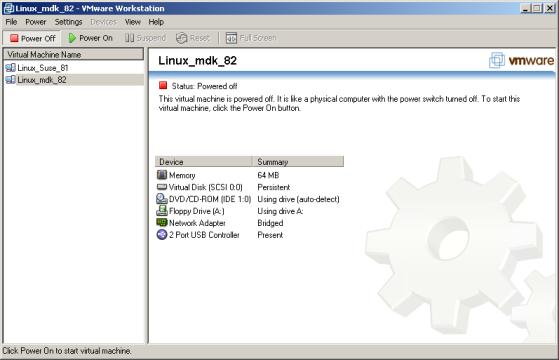
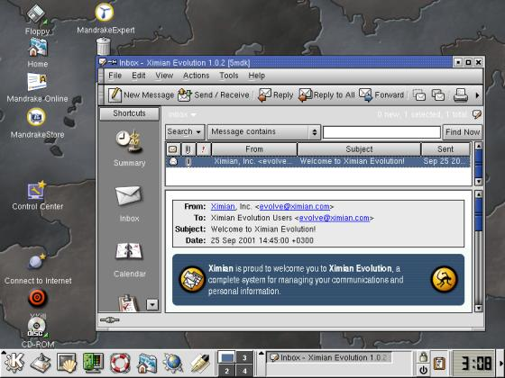
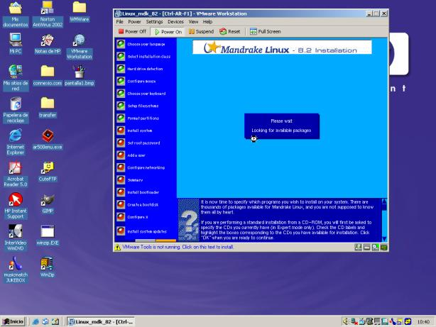
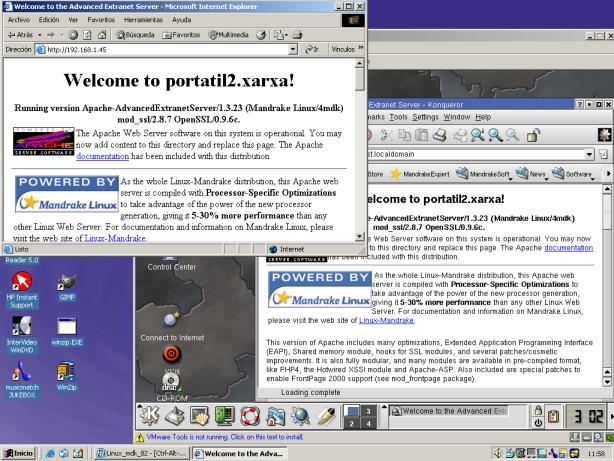
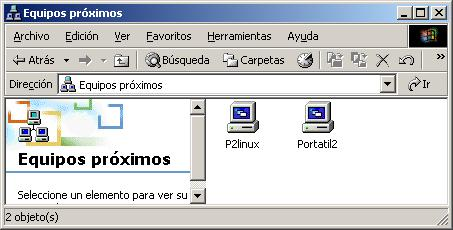

Copyright©1996-2003
Specialized Systems Consultants, Inc.
首頁(H)｜HOWTO(T)｜指南(G)｜FAQ(F)｜手冊頁(M)｜Linux電子報(L)｜LinuxFocus(S)
Linux電子報首頁｜目錄｜FAQ
讓 Linux 更加有趣呦！
為 Linux 愛好者們分析 vmWare 的好與壞
vmWare 是一個 virtual machine. 如同有些模擬器可用來模擬 Motorola-based 的機器, vmWare 可用來模擬 Intel-based 的 PC. 然而, vmWare 在模擬一個 Intel-based 的作業平臺時, 它本身就是建立在一個 Intel-based 的平臺上! 這麼一來, vmWare 將可將許多指令直接傳給 CPU 執行, 而不需經轉譯, 由此加快程式速度. 相較之下, Java virtual machine 就必須先將 Java byte-code 轉成 Intel 指令才能進行模擬.
沒錯, vmWare 是套商業軟體; 也就是說, 你必須付錢購買它, 僅管你可以免費使用試用版. 在繼續討論之前, 請容許我申明我對商業軟體的立場: 我不反對商業軟體. 我使用過幾個商業軟體, 而它們也的確不錯, 值得花錢購置. 然而, 我寧可使用開放程式碼的軟體 - 因為 - 當某地方出錯或不如我意時, 我可以自己修正它, 而毋需借助企業之力. 我一點也不反對 vmWare...但為了上述的理由, 我比較希望自己現在正在評寫一個具相同功能的開放碼軟體.
1/. 一個很好的理由是: 你必須用它. 舉我自身的例子來說: 我在工作時,和好幾個人共用一台筆記型電腦 (他們成為 Linux 使用者); 最主要的是,我還有以下的理由:
另一方面, 我有教授一門架設管理網站的課. 由於必須使用 Apache 及 PHP, 我的筆記型電腦最好要能跑 Linux 和 X Windows.
2/. vmWare 能迎合你個人 - 而非電腦上那些真正的硬體 - 的需求來建立一個 virtual machine. 舉例來說, vmWare 會預設建立一個 4 GB 的檔案, 以模擬一個硬碟. 對這個 virtual machine 而言, 這個檔案就像個真正的 SCSI 磁碟機一樣, 然而它其實只是 IDE 磁碟機上的一個檔案. 另外呢, 它會自動地將你的 IDE 光碟機當成...一個真正的 IDE 光碟機來用. 不過你可以讓 vmWare 把 IDE 當成 SCSI 磁碟機看待, 或是建立一個 ISO 光碟機映像檔 (如同裡頭放了一張光碟的磁碟機, 用來執行安裝程式). 你可以在 vmWare 上使用那些你根本沒有的硬體, 像是磁帶機; 這對實驗性質的事務極有助益.

3/. 你可同時執行數個 virtual machine, 並建立一個區域網路連結不同的作業系統. 好處是你將可以:

4/. 若你非常需要跑一個現有作業系統無法執行的程式, 你只需要開 vmWare 視窗即可取得.
有趣的是, 這點曾是那些需要跑 Window-only 的(大多為商業軟體)程式的 Linux 使用者的難題之一. 在 StarOffice 和 OpenOffice 普及以前, 文件處理器和表格程式曾是 Linux 的問題. 而現在我常面臨相反的困境: 我在 Linux 裡找到一個有趣的程式, 卻沒法在 Windows 跑, 即使是最新的版本也是如此. 諸如 gnuplot 和 scilab 這類的數學運算工具, 或是我偏好的 Evolution 都有這個麻煩.
1/. 速度. 不管怎麼說, 使用 vmWare 會使得兩個以上的作業系統共享單顆 CPU. 若我們一次只在一個作業系統上跑 user-land 程式, 問題倒還好. 附帶一提, 在多 CPU (SMP)系統下使用 vmWare, 並將每顆 CPU 分給不同的 virtual machine 是個不錯的主意... 雖然你很可能得將主作業系統的核心改頭換面一番.
2/. 還是速度. 要以合理的速度執行 vmWare, 你需要充足的 RAM. 若沒有至少 128 MB 以上的 RAM 給每個作業系統, 你就等著看系統一直作 swapping. 在筆記型電腦上尤其如此 (別忘了筆記型電腦的硬碟不是為了繁重的工作載量而生的). 你可以試著不要使用 virtual machine 的 swap 系統.
3/. 只有速度. 所有的 virtual machine 會共享週邊設備 (磁碟機, 網路卡等). 試想在一臺機器上跑兩個 virtual machine - 假如運氣夠好, 每個系統可平均分配到 1/3 (別忘了執行這些 virtual machine 的主系統!) 的頻寬. 實際情況往往比理論要更糟, 需端賴主作業系統的設計和效率而定.
vmWare 的使用方法很簡單. 我只安裝了 Window 版本的 vmWare (因為下載的頻寬問題), 而如前文所述, 我用的是最迫切需要的版本. 然而, 較理性的方法是用較穩定的系統做主系統 - 也就是說, 在 Linux 下安裝 Window 為 virtual machine; 但基於之前說過的理由, 我做了相反的事.
在 Linux 中安裝 virtual machine 是易如反掌, 你可以:
我安裝了 SuSE 8.1 和 Mandrake 8.2, 沒遇到任何問題, 除了 virtual machine 堅持要使用 IDE 光碟機作 booting. 一但系統安裝, 我便能立即轉換成使用 SCSI 磁碟機.

Virtual machine 可經專門的 vmWare briding protocol 連接到網路 - 但前提是你的主系統上必須先有網路卡. 它可從你的網路 DHCP server 取得靜態或動態 IP 位址.
接下來, 不論是從 virtual machine 本身, 還是網路上其他的電腦, 甚至連主系統都能透過 virtual machine 的外部網路位址來連接到一個在 virtual machine 上執行的 server.
請注意, vmWare 的 briding protocol 會將 192.168.19.0/24 及 192.168.199.0/24 同時分配給主系統和 virtual machine 在 subnetwork 上的位址. 你不能使用這些位址來連線.

若要將檔案從一個系統傳到另一個, 我所能使用的最簡便的方法是在一個 virtual 的 Linux 機器上建立一個 Samba server. 用起來很方便, 理論上也跑得比一個 100 Mbaud link 快, 但不太適合在生產環境下使用.

由以上各項結果, 我得出 vmWare 是個有趣的概念的心得. 當然, 我也發現了它的一些缺點. vmWare 適合用於發展環境下, 作程式設計或系統管理的用途. 但它不該拿來做生產工具: 若你真的需要兩個作業系統, 那還是去買兩臺電腦吧!
若有任何人想要翻譯這篇文章: 我以 GPL 軟體認證的精神寫下它的, 亦即你有完全的自由 (我甚至要鼓勵你) 來拷貝, 張貼, 翻譯它. 但是拜託 - 拜託寄 email 通知我一聲. 我喜歡知道我的哪些文章被翻譯 - 這對教學有幫助 :-)
Alan 在 Andorra 的高中和大學教電腦科學. 他的興趣包含 (數位和傳統的) 科學影像處理, 旅遊, 收集石頭和處理器.
Copyright © 2003, Alan Ward. Copying license Published in Issue 86 of Linux Gazette, January 2003
首頁(H)｜HOWTO(T)｜指南(G)｜FAQ(F)｜手冊頁(M)｜Linux電子報(L)｜LinuxFocus(S)